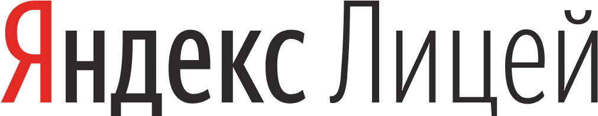

Яндекс.Лицей — это образовательный проект Яндекса по обучению школьников программированию.
Учебная программа рассчитана на два года.
На занятиях ребята знакомятся с теорией и осваивают технологии на практике.
Для кого
Программа подходит старшеклассникам,
которые
- имеют склонность к алгоритмическому мышлению, увлекаются ИТ-технологиями
- владеют хотя бы одним языком программирования на уровне знания условных и циклических конструкций
- имеют устойчивые знания по школьному курсу математики
Преимущества для школьников
Программа ориентирована на учащихся старших
классов
- Бесплатный очный двухгодичный курс с сертифицированным преподавателем
- Выпускной проект
- Навыки самостоятельной разработки на языке Python
- Сертификат от компании Яндекс, признанного лидера в сфере IT-инноваций
- Продолжительность обучения в Яндекс.Лицей – 2 учебных года первый – с октября по май, второй –с сентября по май
- Занятия проходят 2 раза в неделю в очном формате в группах с сертифицированным преподавателем
